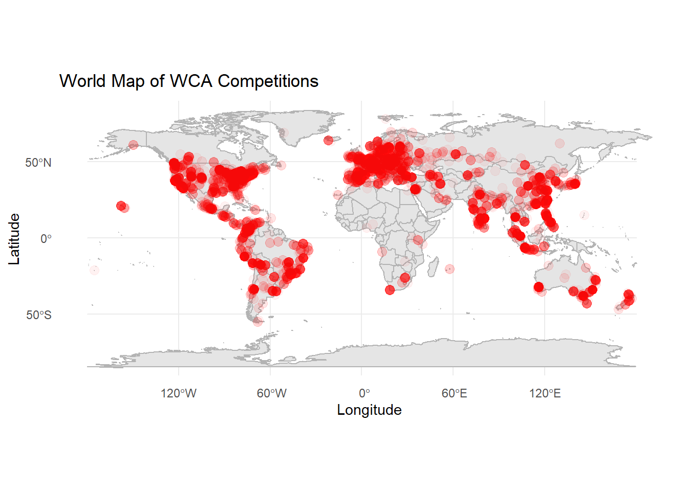
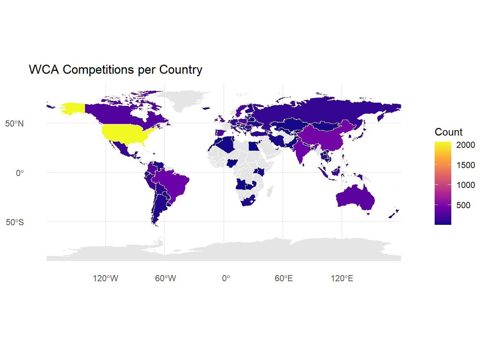
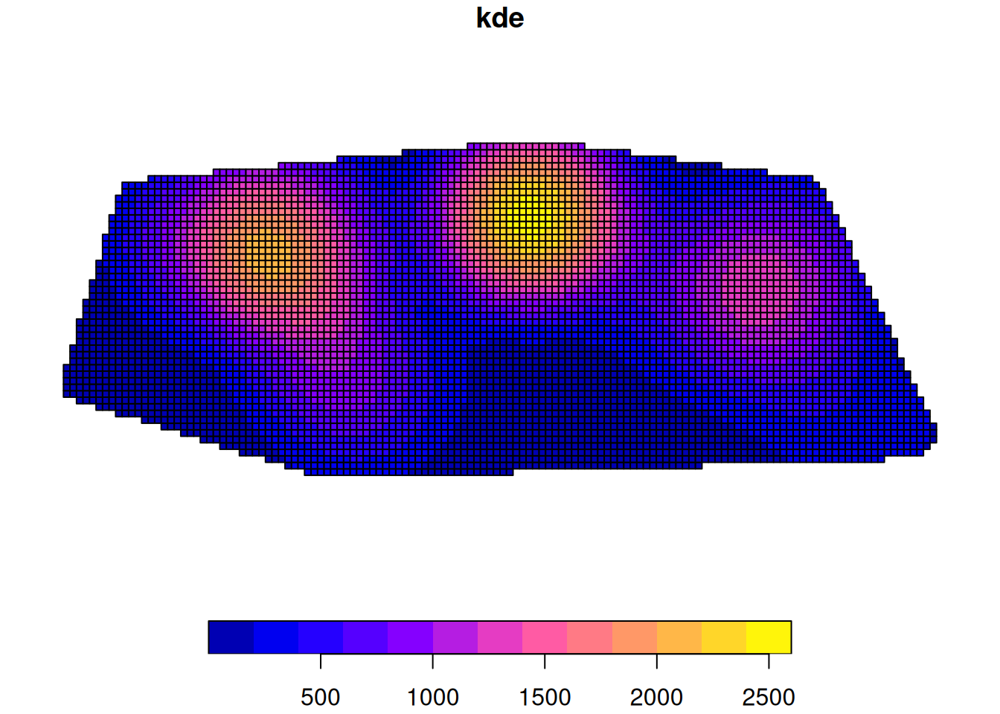

library(tidyverse)
library(leaflet)
library(knitr)
library(kableExtra)
library(htmlwidgets)
library(widgetframe)
library(sf)
library(maps)
library(sfhotspot)
library(dplyr)
library(ggplot2)
library(rnaturalearth)
library(rnaturalearthdata)
library(leaflet)
library(countrycode)
knitr::opts_chunk$set(widgetframe_widgets_dir = 'widgets' )
knitr::opts_chunk$set(cache=TRUE) # cache the results for quick compilingRubik’s Cube Competition Density and Correlation with 3x3 Speed
Are the fastest speedcubers the ones who have the most competitions near them?
Introduction
The Rubik’s Cube is a popular 6-sided twisty puzzle first invented in the 1974 by Erno Rubik. Since the late 2000s, the cube’s popularity has made a comeback. Many people enjoy the competitive aspect of the cube, aiming to solve it as fast as possible. The current 3x3 single world record is 3.05 seconds by Xuanyi Geng from China. The current 3x3 average world record is 3.90 seconds by Yiheng Wang from China.
Official Rubik’s Cube competitions are governed by the World Cube Association (WCA), an entirely volunteer run non-profit organization that was founded in 2004. More than 273,000 people have competed in WCA sanctioned competitions. Competitions are held every week worldwide, but the geographic distribution of competition certainly isn’t even. The United States has had over 2,000 cube competitions while other countries have had less than 10 or even none.
My project aims to determine the relationship between the density of competitions in a given country and the speed of a country’s competitors. I have 2 main research questions: How are World Cube Association competitions geographically distributed? Is the density of WCA competitions correlated to the speed of the competitors in the region?
Materials and methods
My research questions will be answered with the WCA Results Export. This is a massive dataset that is updated every week. It contains data about each competitor, the number of competitions attended, results and rankings, citizenship, gender, records, and world championship podiums. It also includes information about every competition: location, the number of competitors, what events were held, podium finishers.
There are many metrics to determine 3x3 speed. The WCA records the competitors’ single and average when they compete. The ‘single’ is the fastest single attempt for the puzzle. The average is done taken after 5 solves, with the arithmetic mean taken after the slowest and fastest times are removed. Speedcubers acknowledge that good singles may be achieved with luck, while fast averages require more skill.
3x3 Speed for each country will be determined with 3 variables:
- Mean of the top 25 3x3 averages
- Number of 3x3 Podiums at World Championships
- Number of 3x3 average world records
These 3 variables will be compared to the number of competitions in each country.
I also want to explore each competitor’s speed in relation to the density of competition. I will calculate the geographic center of competitions for each cuber and determine whether faster 3x3 competitors live in regions with more competitions.
Libraries
Download the required data
# loads the tsv from the WCA Results Export
competitions_tsv <- read.delim("data/WCA_export_Competitions.tsv", header = TRUE)
# contains every competitor and their country
persons_tsv <- read.delim("data/WCA_export_Persons.tsv", header = TRUE)
# contains every competitor's best 3x3x3 average
ranks_tsv <- read.delim("data/WCA_export_RanksAverage.tsv", header = TRUE)Cleaning the Data
# cleaning competitions
competitions_tsv <- competitions_tsv %>%
select(id, name, countryId, latitude, longitude, cancelled, year) %>% # selects the columns I want to keep
filter(cancelled == 0) %>% #removes cancelled competitions
mutate(longitude = as.numeric(longitude), # converts from chr to numeric
latitude = as.numeric(latitude)) %>%
mutate(latitude = latitude / 1e6, # converts from microdegrees to degrees
longitude = longitude / 1e6) %>%
mutate(countryId = countrycode(countryId, origin = "country.name", destination = "country.name")) %>%
mutate(iso_a3 = countrycode(countryId, origin = "country.name", destination = "iso3c")
) # adds iso country code
# creates a dataframe that counts the number of comps per country
counts <- competitions_tsv %>%
count(countryId, name = "count") %>%
mutate(iso_a3 = countrycode(countryId, origin = "country.name", destination = "iso3c")
)
# Convert TSV to sf object with projected CRS
competitions_sf <- st_as_sf(competitions_tsv,
coords = c("longitude", "latitude"),
crs = 4326)
#cleaning persons and ranks will be more difficult as their are currently stored in a single column in their TSVs. The plan is to separate by commas.Map of all WCA Competitions
# simple map with all of the competitions plotted individually
ggplot() +
borders("world", colour = "gray70", fill = "gray90") +
geom_sf(data = competitions_sf, color = "red", size = 3, alpha = 0.05) +
theme_minimal() +
labs(
title = "World Map of WCA Competitions",
x = "Longitude",
y = "Latitude")Warning: `borders()` was deprecated in ggplot2 4.0.0.
ℹ Please use `annotation_borders()` instead.
world <- ne_countries(scale = "medium", returnclass = "sf")
count_data <- full_join(world, counts, by = "iso_a3")
# choropleth map
ggplot(count_data) +
geom_sf(aes(fill = count), color = "white") +
scale_fill_viridis_c(option = "plasma", na.value = "gray90") +
theme_minimal() +
labs(title = "WCA Competitions per Country", fill = "Count")
#table of countries with the most competitions
top_countries <- count_data %>%
select(count, countryId) %>%
st_drop_geometry() %>%
arrange(desc(count)) %>% # sort from highest to lowest
head(10)
kable(top_countries,
col.names = c("Country", "Competition Count"),
caption = "Top 10 Countries by Number of Competitions")| Country | Competition Count |
|---|---|
| 2065 | United States |
| 457 | China |
| 420 | Brazil |
| 407 | India |
| 329 | Australia |
| 290 | Colombia |
| 280 | Canada |
| 261 | Spain |
| 250 | Poland |
| 243 | Philippines |
KDE
competitions_sf_utm <- st_as_sf(
competitions_tsv,
coords = c("longitude", "latitude"),
crs = 3857)
competitions_kde <- hotspot_kde(competitions_sf_utm)
plot(competitions_kde["kde"])
Results
[~200 words]
Tables and figures (maps and other graphics) are carefully planned to convey the results of your analysis. Intense exploration and evidence of many trials and failures. The author looked at the data in many different ways before coming to the final presentation of the data.
Show tables, plots, etc. and describe them.
Conclusions
[~200 words]
Clear summary adequately describing the results and putting them in context. Discussion of further questions and ways to continue investigation.
References
All sources are cited in a consistent manner